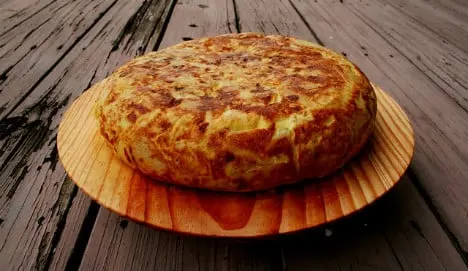

Tortilla de Patatas

Description
The simple yet hugely satisfying potato omelette is the staple of
practically every Spanish menu, from the hole in the wall bars to the
fanciest of restaurants.
Ingredients
- Six eggs
- Two potatoes, peeled, cut in half, and sliced horizontally
-
5 cups (1.2L) homemade or store-bought unsalted chicken stock, divided
(see notes)
- One large onion, sliced
- Salt
- One litre of olive oil (trust me on this)
Steps
-
In a large stockpot over medium high heat, add 3/4 litres of olive oil.
When it is hot but not smoking, add the potatoes and onions. Lower heat
to medium. Cook, poaching the potatoes and onions until the potatoes are
fork tender, about 10 minutes.
-
Meanwhile, in a large bowl, crack your eggs and beat. Add salt. At this
time, get all the things you are going to need for the tortilla. A large
plate, two frying pans, one medium, one smaller (optional). IMPORTANT
NOTE: THEY MUST BE NON-STICK FRYING PANS. If not, your tortilla will
stick and the whole process is ruined.
-
When your potatoes and onions are done, strain them, reserving two tbsp
of oil. Let them cool for at least 10 minutes. When your potatoes are
cool enough to touch, then mix them in with your scrambled eggs.
-
In a medium frying pan, add one tbsp of your reserved oil. Heat over
medium heat until almost smoking.
-
Now add your egg and potato mixture, and as soon as it hits the pan,
start stirring the eggs so that they coagulate and the uncooked part
goes to the bottom, and you get some cooked egg on top.
-
Simultaneously, as you are stirring the centre, with your wooden spoon,
drag it along the edges to make sure that it is drying up.
-
This enables you to make sure that the tortilla is not sticking on the
edges, so it will flip loosely onto your large plate. Keep doing these
movements until you see little runniness in the middle, and it seems
like it is drying up.
-
When you feel that there won’t be enough egg mix lost when you do “The
Flip”, then place your large plate (it must be larger than the
circumference of your frying pan) on top of the pan and with a flick of
your wrist, flip the tortilla onto the plate, and then slide back into
the frying pan.
-
Slide it back on a clean plate, let rest for at least five minutes, and
serve warm with nice crusty tomato bread.
Back to main